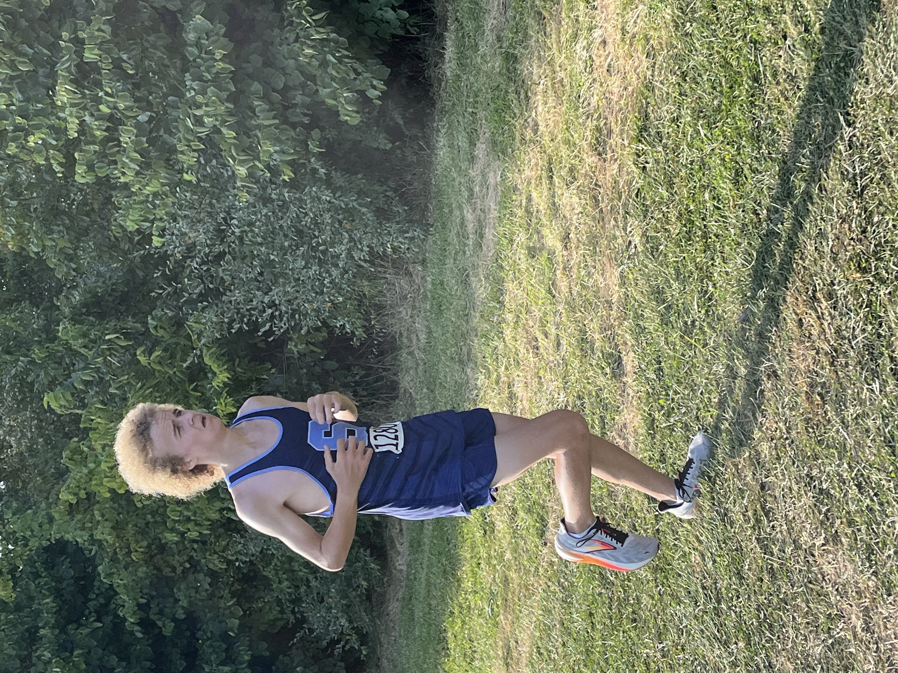
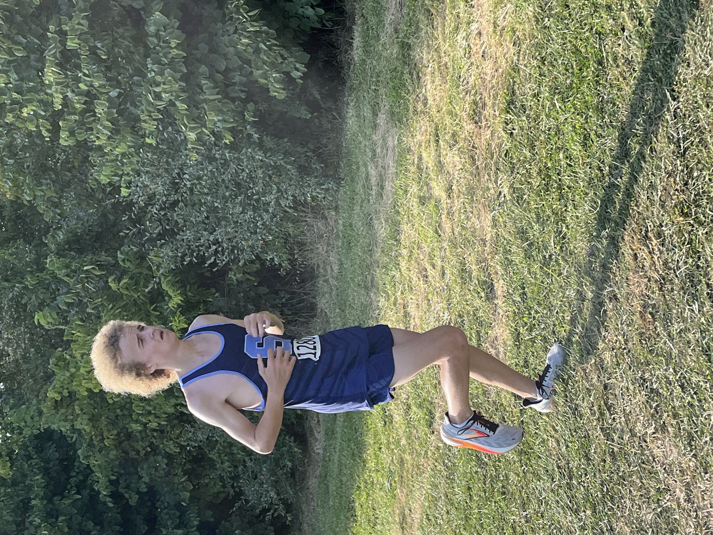

SEC Jamboree #1 Womens 5000 Meters Junior Varsity
Tue Sep 10 2024
Race Summary
At the SEC Jamboree #1 held on September 10, 2024, at Willow Metropark, the Ann Arbor Skyline Junior Varsity girls team delivered a strong performance, finishing 4th overall with a team score of 84 points. The race included competitive teams from Saline, Dexter, Ann Arbor Pioneer, and others.
Leading the charge for Skyline was sophomore Alison Kauffman, who placed 8th with a time of 23:43.30, followed by freshman Violet Olley in 19th place with a time of 24:37.10. Junior Adrienne Stewart was close behind, finishing 20th with a time of 24:40.60.
Senior Julianna Heung finished 25th, clocking in at 25:21.20, and freshman Calla Sopoci followed in 26th with a time of 25:22.90, rounding out Skyline’s top five scorers.
Other notable performances included sophomore Ruthie Scott (25:31.00), senior Alexandra Wren (25:33.90), and sophomore Elsa Wenzlaff (25:36.00), all contributing to the team's overall success.
The Skyline girls showed strong depth and consistent effort, securing a solid 4th-place finish in a competitive field.
Team Results
| Place | Team | Score |
|---|---|---|
| 1 | Ypsilanti Lincoln | 22 |
| 2 | Saline | 73 |
| 3 | Dexter | 81 |
| 4 | Ann Arbor Pioneer | 84 |
| 5 | Ann Arbor Skyline | 134 |
| 6 | Ann Arbor Huron | 147 |
| 7 | Temperance Bedford | 213 |
Individual Results
Alison Kauffman
Place
8
Time
23:43.30
Grade
10
Violet Olley
Place
19
Time
24:37.10
Grade
9
Adrienne Stewart
Place
20
Time
24:40.60
Grade
11
Julianna Heung
Place
25
Time
25:21.20
Grade
12
Calla Sopoci
Place
26
Time
25:22.90
Grade
9
Ruthie Scott
Place
31
Time
25:31.00
Grade
10
Alexandra Wren
Place
32
Time
25:33.90
Grade
12
Elsa Wenzlaff
Place
33
Time
25:36.00
Grade
11
Ann Kececi
Place
43
Time
26:14.90
Grade
12
Nina Beals
Place
50
Time
26:56.30
Grade
11
Lily Greenberg
Place
71
Time
28:39.70
Grade
10
Arabella Kessler
Place
90
Time
32:07.70
Grade
11
Livi Byers
Place
99
Time
33:54.10
Grade
9
Gallery


 
